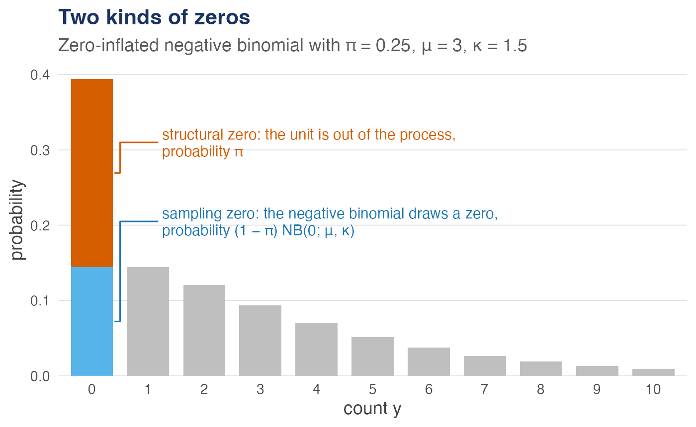
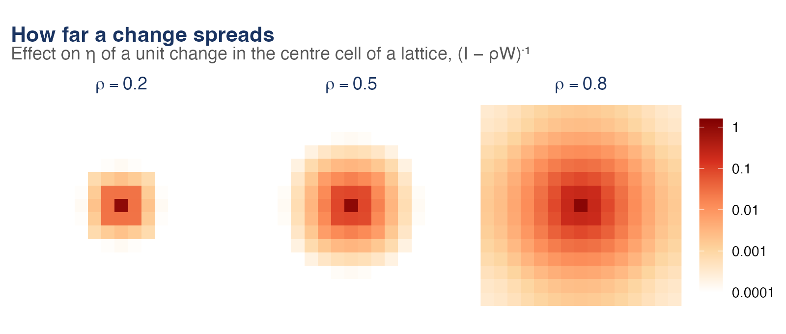

zisar fits the zero-inflated spatial autoregressive (ZISAR) model for spatial count data with excess zeros. A simultaneous autoregressive process on the latent log-mean of a zero-inflated negative binomial model carries spatial spillovers, and unit-level random effects absorb residual heterogeneity:
A zero is either structural, from a unit out of the process, or a sampling zero of the negative binomial; and a change in one unit reaches the others through the spatial multiplier, further the larger :


With zero_spatial = "reduced" the zero-inflation predictor gets a reduced-rank spatial field of its own, for structural zeros that cluster in space.
Parameters are estimated by maximising the Laplace approximation to the marginal likelihood with TMB, whose automatic differentiation and sparse matrix algebra make tens of thousands of spatial units feasible.
Installation
Install the development version from GitHub:
# install.packages("pak")
pak::pak("NiccoloSalvini/zisar")The package compiles C++ code, so it needs a compiler: Rtools on Windows, the Xcode command line tools on macOS.
Example
library(zisar)
# 400 units on a lattice, with spatial dependence rho = 0.5
set.seed(2026)
sim <- rzisar(20, beta = c(0.5, 0.6, -0.4), rho = 0.5, gamma = c(-1, 0.9))
# Count terms before |, zero-inflation terms after it
fit <- zisar(y ~ x1 + x2 | z1, data = sim$data, W = sim$W)
summary(fit)
#>
#> Call:
#> zisar(formula = y ~ x1 + x2 | z1, data = sim$data, W = sim$W)
#>
#> 400 spatial units, 45.5% zeros
#>
#> Count model coefficients (SAR negative binomial, log link):
#> Estimate Std. Error z value Pr(>|z|)
#> (Intercept) 0.3748 0.1071 3.50 0.00047 ***
#> x1 0.5477 0.0778 7.04 0.0000000000019 ***
#> x2 -0.4210 0.0699 -6.02 0.0000000017310 ***
#> ---
#> Signif. codes: 0 '***' 0.001 '**' 0.01 '*' 0.05 '.' 0.1 ' ' 1
#>
#> Zero-inflation model coefficients (binomial, logit link):
#> Estimate Std. Error z value Pr(>|z|)
#> (Intercept) -1.057 0.314 -3.37 0.00076 ***
#> z1 0.894 0.251 3.57 0.00036 ***
#> ---
#> Signif. codes: 0 '***' 0.001 '**' 0.01 '*' 0.05 '.' 0.1 ' ' 1
#>
#> Spatial and dispersion parameters:
#> Estimate Std. Error z value Pr(>|z|)
#> rho 0.599 0.110 5.44 0.000000052 ***
#> kappa 2.509 1.838
#> sigma 0.479 0.161
#> ---
#> Signif. codes: 0 '***' 0.001 '**' 0.01 '*' 0.05 '.' 0.1 ' ' 1
#>
#> Log-likelihood (Laplace): -755.61 on 8 Df
#> AIC: 1527.2 BIC: 1559.1
#> Log-determinant: eigen. Optimiser: converged after 30 iterations.In a spatial model a coefficient is not the effect of its covariate: zisar_effects() splits it into the effect on the unit itself (direct) and the spillover on the other units (indirect).
zisar_effects(fit, B = 100)
#> ZISAR average effects on E[y] (simulation SEs, B = 100)
#>
#> Direct Indirect Total
#> x1 1.4169 (0.2763) 1.8708 (0.9451) 3.2877 (1.0974)
#> x2 -1.0890 (0.2339) -1.4378 (0.7004) -2.5268 (0.8249)
#> z1 -0.5302 (0.1113) 0.0000 (0.0000) -0.5302 (0.1113)vignette("zisar") covers the model, spatial weights from real geography, counterfactual predictions, model comparison, clustered structural zeros and large data sets.
Citation
Salvini N, Arbia G, Nardelli V (2026). “ZISAR: A Zero-Inflated Spatial Autoregressive Model for Count Data with Random Effects.” Preprint, Zenodo. doi:10.5281/zenodo.24118297 https://doi.org/10.5281/zenodo.24118297.